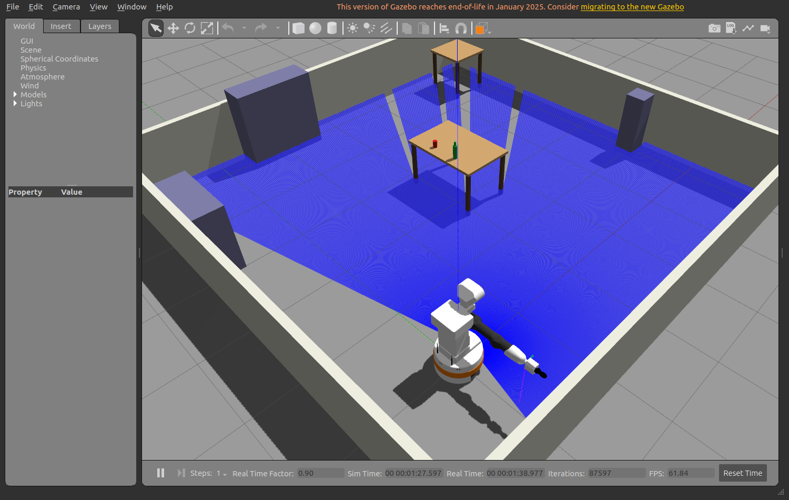
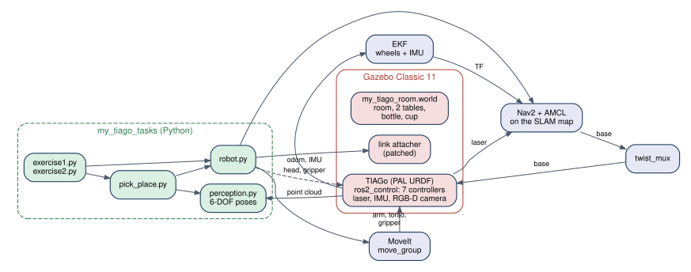
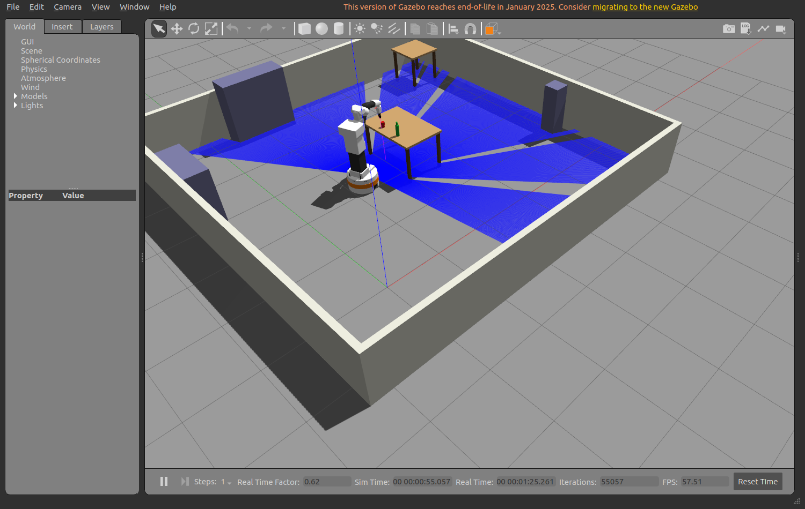
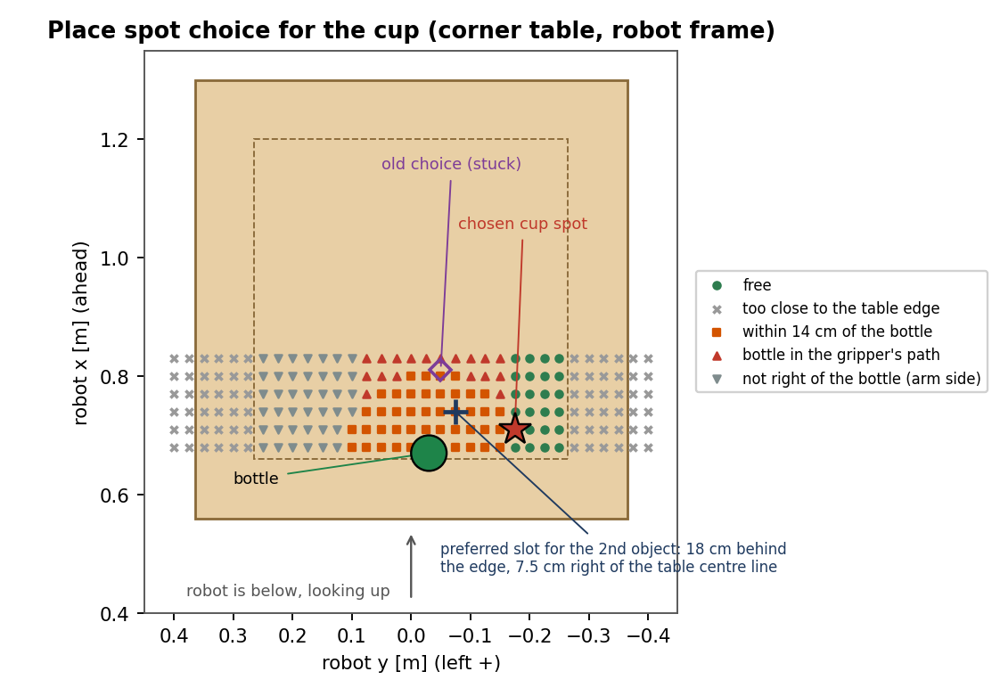
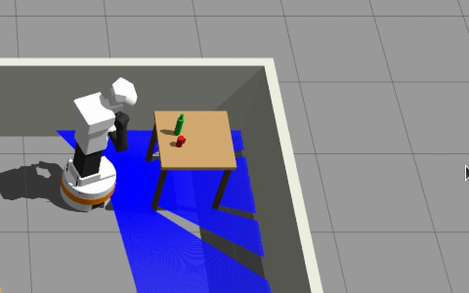

Both exercises are solved in simulation with my own ROS 2 workspace (my_tiago_ws). In Exercise 1, TIAGo starts in a corner of the room, drives in front of the middle table with Nav2 and moves its gripper right above the table with MoveIt. In Exercise 2, a Python script moves the bottle and the cup to the corner table autonomously: the objects are found with the head RGB-D camera (table plane and a 6-DOF pose per object), picked with MoveIt, carried with Nav2 and placed on a free spot of the corner table. The demo video video/demo.mp4 (2 minutes) shows one run of each exercise.
Task
Script
Result (fresh simulation each run)
Exercise 1
my_tiago_tasks/exercise1.py
5 of 5 runs: gripper pointing down, fingertips 0.29–0.31 m above the table top; 41–66 s
Exercise 2
my_tiago_tasks/exercise2.py
4 of 4 runs with the final code: bottle and cup upright on the corner table (Gazebo ground truth), cup to the right of the bottle, 15–20 cm apart, at least 14 cm inside the table edges; 7–9 min

Figure 1. The simulation: TIAGo in its start corner, the middle table with the cup (red) and the bottle (green), the corner table at the back.
1. What is pre-built and what I built
Part
Source
TIAGo robot model (URDF, meshes)
PAL Robotics' description packages (tiago_description, pmb2_description, pal_gripper_description, pal_urdf_utils), used as source copies; I added one option (use_mock_hardware) and a wrapper that selects the PAL gripper and the Schunk F/T sensor
IFRA_LinkAttacher Gazebo plugin (Cranfield University), built from source with my patch
Simulation environment
Mine: my_tiago_room.world (6.6 m room, middle table 0.8 × 1.2 m, corner table 0.7 × 0.7 m, bottle, cup, furniture). No pre-built world was used. The map of the room was built with slam_toolbox.
Configuration and code
Mine: launch files, controller, EKF, twist_mux, SLAM and Nav2 parameters, MoveIt configuration (made with the Setup Assistant), and the Python task code: robot.py, perception.py, pick_place.py, exercise1.py, exercise2.py
I deliberately did not use PAL's all-in-one launch files: every layer (robot model, controllers, MoveIt, Gazebo bringup, mapping, navigation, task code) is my own package, so that each part is understood and can be changed.
2. System overview

Figure 2. Main components. The Python task code talks to Nav2, MoveIt, the controllers and the link attacher through one interface class (robot.py).
3. Exercise 1: decisions
Navigation with a map. I mapped the room once with slam_toolbox and navigate with Nav2 and AMCL on the saved map. The robot spawns where mapping started, so AMCL starts localised at (0, 0, 0).
Odometry from wheels and IMU. The simulated base slips when it turns on the spot; wheel odometry alone was off by 3.4 m and 77° after one trip and AMCL got lost. An EKF (robot_localization) takes the forward speed from the wheels and the heading from the base IMU; afterwards AMCL stayed within 0.11 m and 4° of the ground truth.
MoveIt through its ROS interfaces. MoveIt's Python API (moveit_py) is not released for ROS 2 Humble, so robot.py sends goals to move_group's action and services (/move_action, /compute_cartesian_path, /execute_trajectory, /apply_planning_scene).
The table is in MoveIt's collision scene before the arm moves, so the arm is planned around it.
Target relative to where the robot stopped. Nav2 stops within 10 cm and 20° of the goal. A target fixed on the table was sometimes 0.81 m ahead of the base, beyond the arm's reach with a downward gripper (about 0.72 m, which I measured). The gripper target is therefore 0.70 m ahead of the robot's actual pose, and the robot stops 0.5 m before the table.

Figure 3. Exercise 1 result: gripper pointing down above the middle table.
4. Exercise 2: decisions
Perception (6-DOF poses), perception.py
One point cloud from the head camera is transformed into the robot frame. RANSAC finds the table plane (height, normal) and PCA its outline. Points above the table are clustered on a 1 cm grid. For each cluster, a least-squares circle fit gives the cylinder's axis (x, y) although only its front half is visible; the height comes from the highest point, z from the table height; roll and pitch from the table normal; yaw from the cup's handle (points outside the circle); the label from the mean colour. Measured against the world file: table height within 2 mm, object positions within about 2 cm, heights and radii within 2 mm. The head is pointed at the objects before measuring: an object at the image edge was cut off (9.9 cm instead of 26 cm high).
Pick and place, pick_place.py
Side grasp, object front-right of the base. If an object is not about 0.70 m ahead and 0.10 m to the right (the arm's side), the base is repositioned first. Reaching across the body made the robot tip onto one wheel.
Pre-grasp with MoveIt, then straight lines. A planned pre-grasp pose 15 cm before the object, then a straight approach, lift, lowering and retreat. Straight-line paths are refused if a joint jumps by more than 0.3 rad per 1 cm step or travels more than 1.2 rad: without this guard, an IK flip made the arm swing round and threw the robot 0.5 m. Other approach directions are then tried. While an object is held, the hand reaches the carry pose along a straight line and any planned move runs at reduced speed: a fast planned swing of the outstretched arm once spun the whole robot around.
Holding objects in Gazebo. Position-controlled fingers cannot hold an object in Gazebo's physics. After closing the fingers 4 mm short of the surface, the object is fixed to the gripper with the IFRA_LinkAttacher plugin and released before the fingers open. The plugin froze Gazebo when releasing; I patched it to pause the world around the joint change (Gazebo's own mechanism) and to forget removed joints.
Choosing where to place. A grid of candidate spots on the measured outline of the corner table: at least 10 cm from the edges, 14 cm from objects already there, and not behind an object (the gripper approaches horizontally). The preferred spots are fixed on the table itself (its position is known from the map), so they do not depend on how the robot stopped: the bottle 7.5 cm left of the table's centre line and the cup 7.5 cm right of it. The arm is mounted on TIAGo's right, so the second object must stand to the right of the first: placing the cup on the left made the arm reach across the standing bottle. The object is released 1.5 cm above the table, and the gripper rises above the object's top before pulling back.
Checks with the camera. After a grasp, the table must be seen without the object on it; after placing, the object must be seen on the corner table. Each pick has up to 3 attempts.

Figure 4. Place spot choice for the cup next to the already placed bottle.

Figure 5. Exercise 2 result: bottle and cup on the corner table.
5. Other decisions worth mentioning
Own controller file (values from PAL's public simulation), the same file for mock hardware and Gazebo; only the hardware plugin in the URDF changes.
twist_mux in front of the base: Nav2 publishes on /cmd_vel, the base controller listens elsewhere; twist_mux also lets the keyboard override Nav2.
Static-map costmaps for Nav2: the room is fully mapped, and with the laser layers the planner's and controller's TF buffers intermittently froze.
MoveIt collision matrix: 41 wrist and gripper link pairs from PAL's SRDF added to the Setup Assistant result; without them MoveIt refused normal wrist poses.
Localisation watchdog. In a few test runs AMCL silently stopped updating (no error), always with both RViz windows open, which also displayed the full head-camera point cloud. Before every drive the robot checks that AMCL is current; if not, it restarts AMCL through Nav2's lifecycle manager at the pose estimated from AMCL's last update plus the EKF odometry. The point cloud display is off by default.
CycloneDDS needs a higher participant limit on localhost (CYCLONEDDS_URI, see INSTALL.md) for Gazebo, Nav2 and MoveIt to run together.
Limitations. Tested only with the objects in their start positions; the cup's handle direction is sometimes misread (the grasp then approaches along the line of sight, which works); the link attacher replaces real grasp forces and is not needed on the real robot.
6. Sources
PAL Robotics TIAGo ROS 2 packages: tiago_robot / pmb2_robot / pal_gripper description, controller and navigation configuration (github.com/pal-robotics). Controller values and Nav2 parameters are based on PAL's public-simulation files.
ROS 2 Humble documentation (docs.ros.org/en/humble), ros2_control and gazebo_ros2_control documentation.
MoveIt 2 documentation and the moveit_msgs action and service definitions (moveit.picknik.ai).
Nav2 documentation and nav2_simple_commander (docs.nav2.org); slam_toolbox (github.com/SteveMacenski/slam_toolbox); robot_localization (docs.ros.org/en/humble/p/robot_localization); twist_mux.
IFRA_LinkAttacher, IFRA Group, Cranfield University (github.com/IFRA-Cranfield/IFRA_LinkAttacher), Apache-2.0.
Algorithms: RANSAC (Fischler and Bolles, 1981); algebraic least-squares circle fit (Kåsa, 1976); PCA for the table outline. Implemented with numpy.
7. How to run
Build with colcon build --symlink-install in my_tiago_ws (requirements and ~/.bashrc settings in INSTALL.md). In four terminals, each after source install/setup.bash:
The main Python files are in src/my_tiago_tasks/my_tiago_tasks/: exercise1.py, exercise2.py, pick_place.py, perception.py and robot.py. README.md gives an overview of all packages.